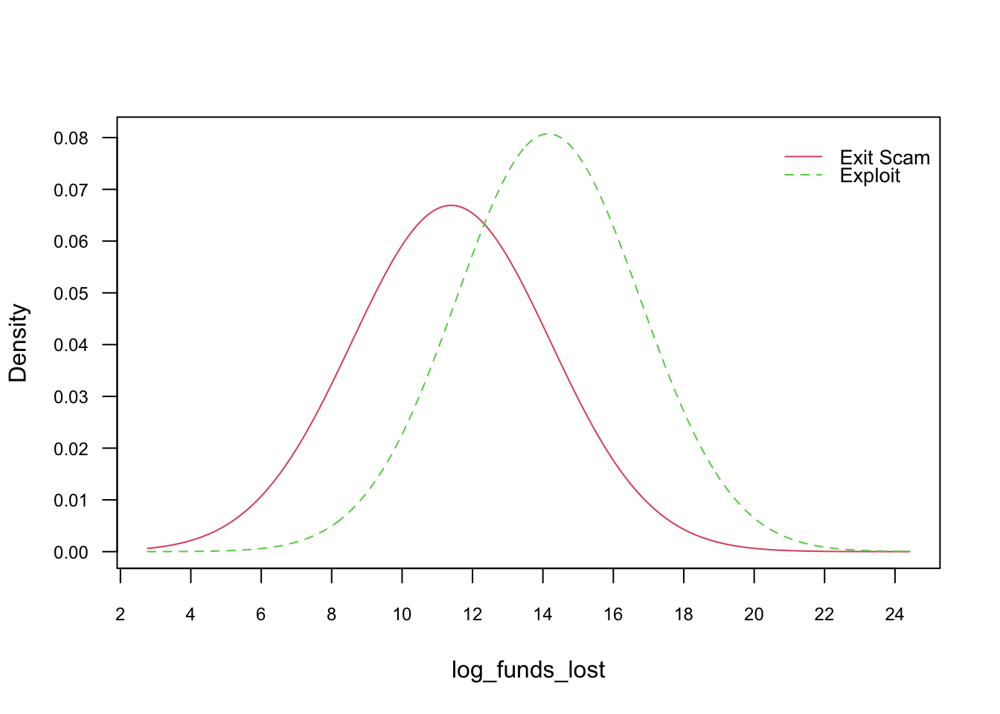
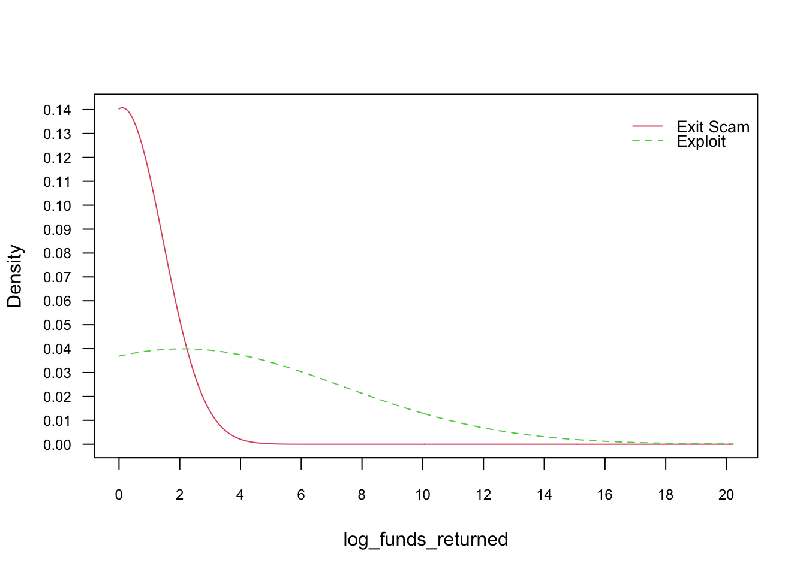
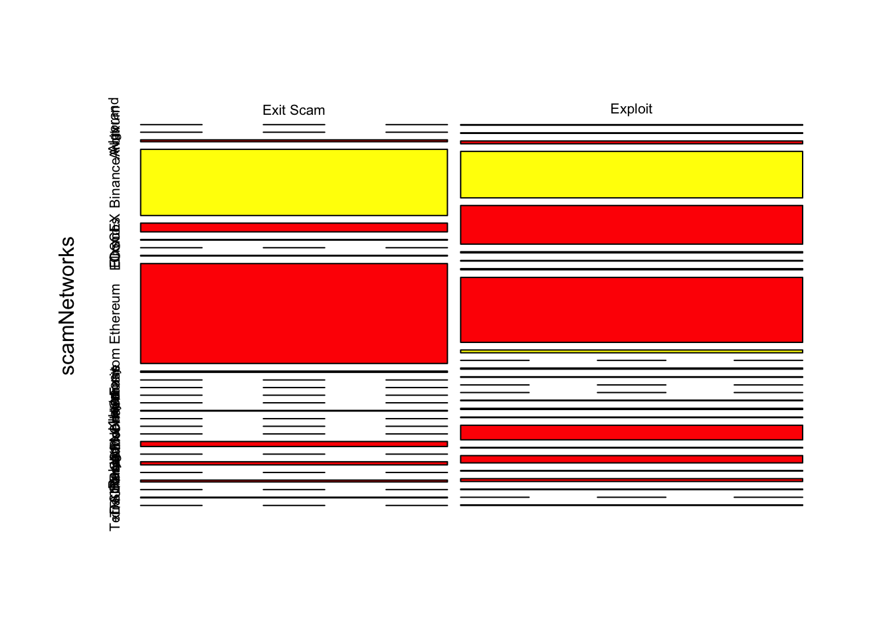
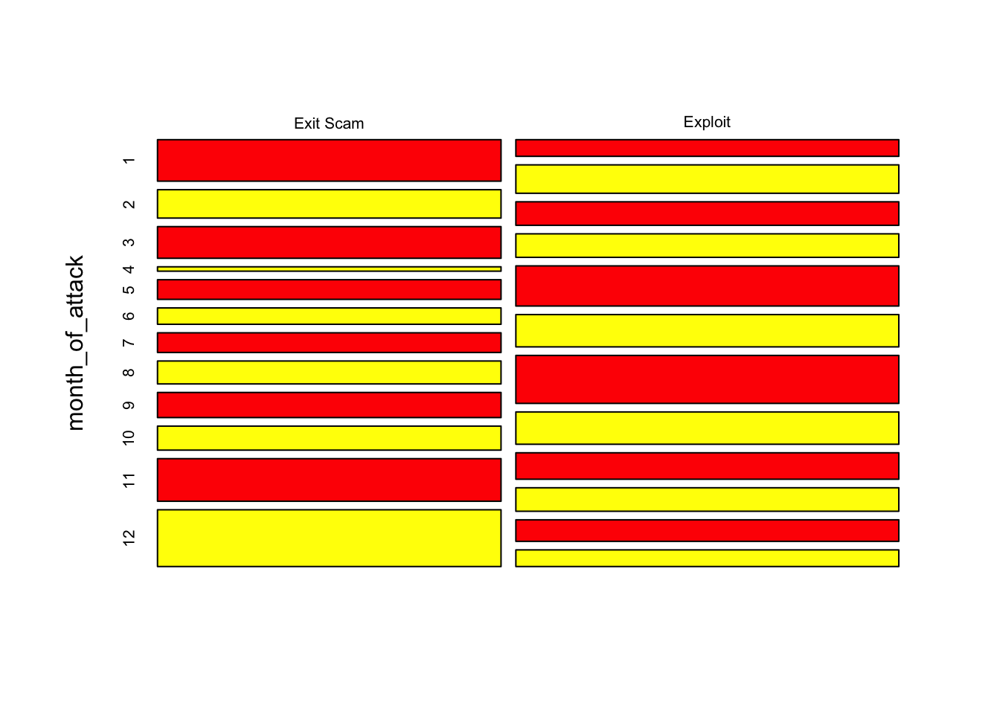
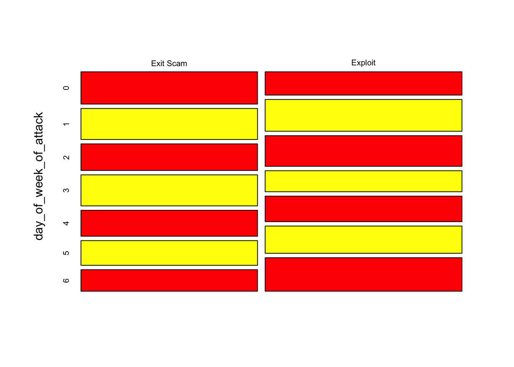
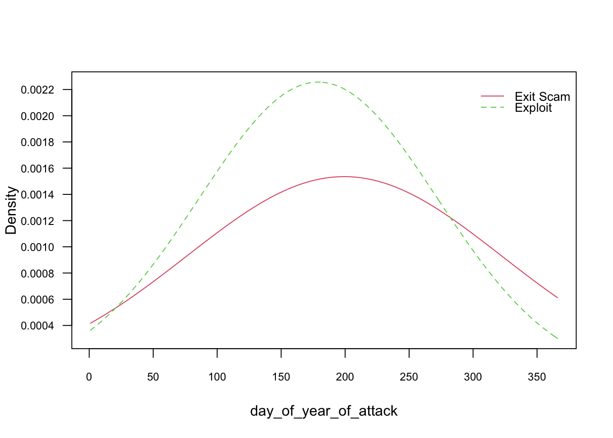

# Removing list brackets from the scamNetworks columndf$scamNetworks <-gsub("\\[|\\]", "", df$scamNetworks)df$scamNetworks <-gsub("'", '', df$scamNetworks)# imputing the missing values as "Other"df$scamNetworks[df$scamNetworks==""] <-"Other"# Split df by scamNetworks feature that has multiple categorical values for respective rows library(splitstackshape)df2 <-concat.split.multiple(data = df, split.cols ="scamNetworks", direction ="long")
Code
# Funds returned NA's to 0, funds lost NAs drop#Let’s calculate the frequency of response variable to see if it is imbalanced. The minimum frequency of #each class is 5 required for analysis.xtabs(~scam_type, data = df2)
# if funds lost is $0, that means the respective observation or record has not much information to offer to us in terms of a Naive Bayes Model. Also, if no funds were lost then no funds can be returned/recovered. Therefore, filtering out the 0 funds_lost observations makes sense if we want balanced classes for our predictor, scam type.
Code
# ~1861 honeypots, 383 rugpulls, and 29 "other" scams filtered out in the process of treating class imbalance # Moreover, no key information, in terms of funds lost or source of the attack, offered about these attacks. We are left with all those rows where funds lost != 0 and where all projects have some information to offer regarding the extent of the scam, helpful in predicting the scam type.#df2 <- df2 %>% filter(description!="The contract owner could disable the transfer function, which restricted users in selling their tokens." & funds_lost!=0) #df2 <- df2 %>% filter(description!="A review of the token contract shows low network activity, which didn't lead to significant funds loss for the user in the past. The project is considered abandoned." & funds_lost!=0)df2 <- df2 %>%filter(funds_lost!=0)xtabs(~scam_type, data = df2)
~1500 honeypot scams filtered out -> projects that were either abandoned or disabled did not have
Now we have all records where funds lost != 0 and predictor with balanced classes
As per REKT Database, Honeypot attacks, Rugpull attacks, Abandoned scams, and the Kronos Dao project (classified as “other”) can be pooled together as Exit Scams and all other attacks can be pooled together as Exploits. We, therefore, will conduct Naive Bayes with a binary predictor. Moreover, after pooling together the respective scam types and treating predictor imbalance, the class frequencies of our desired target variable is: n(Exit Scam) = 380 and n(Exploit) = 435
Taking log of funds_lost and funds_returned to obtain normal distribution assumption for Naive Bayes.
Code
# Removing dictionary values from the source columndf2$log_funds_lost <-log(df2$funds_lost)df2$log_funds_returned <-log(df2$funds_returned +1) # add +1 because we have zeros in funds_returned and helps avoid negative inf values
Code
# Removing dictionary values from the source columndata_nb <-subset(df2, select =c(project_name, log_funds_lost, log_funds_returned, scamNetworks, month_of_attack, day_of_week_of_attack, day_of_year_of_attack, scam_type))
# Exporting the pre-processed dataframe into a CSV file for comparing other classifierswrite.csv(data_nb, "../../data/Clean Data/REKT_Database_Clean_Classification.csv")
model <-naive_bayes(scam_type_grouped ~ ., data = train)
Warning: naive_bayes(): Feature scamNetworks - zero probabilities are present.
Consider Laplace smoothing.
Code
plot(model)






Code
p <-predict(model, train, type ='prob')
Warning: predict.naive_bayes(): more features in the newdata are provided as
there are probability tables in the object. Calculation is performed based on
features to be found in the tables.